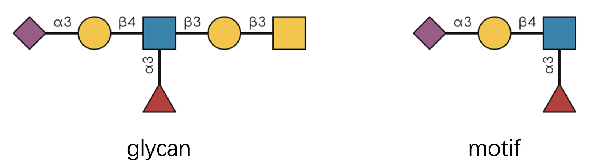

What is a Glycan Motif?
Glycans are branched molecules that appear on cells and biomolecules. Within these structures, recurring patterns are called “motifs.” In this package, a motif is a recognizable substructure that may appear across different glycans.
A glycan motif is simply a substructure that appears in multiple glycans. (This is separate from protein motifs; here we are working with carbohydrates.) Some famous examples include the N-glycan core, Lewis X antigen, and the Tn antigen.
Why Motifs Matter
Motifs are not just labels for repeated structure. They can be functional. They determine how cells interact, how pathogens bind, and how your immune system recognizes friend from foe.
This package, glymotif, provides tools for glycan motif
analysis. It helps you answer two questions:
- Does this glycan contain a specific motif?
- How many times does this motif appear?
Everything works with vectors of glycans, so you can analyze hundreds or thousands at once.
Important note: This package builds on the glyrepr package. If you haven’t used it before, start with its introduction.
A Quick Challenge
Let’s start with a visual puzzle. Can you tell if the glycan on the left contains the motif on the right?

If you said “yes,” you are reading the structure correctly. But what
if I gave you 500 glycans and 20 motifs to check? That is where
glymotif becomes useful.
Let’s see it in action using IUPAC-condensed notation (the standard
text format for glycans in the glycoverse ecosystem). If
this notation looks unfamiliar, start with this
guide.
glycans <- c(
"Neu5Ac(a2-3)Gal(b1-3)[Fuc(a1-6)]GlcNAc(b1-3)Gal(b1-3)GalNAc(b1-",
"Neu5Ac(a2-?)Gal(b1-3)[Fuc(a1-6)]GlcNAc(b1-",
"Man(b1-4)GlcNAc(b1-4)[Fuc(a1-3)]GlcNAc(b1-",
"Gal(b1-3)GalNAc(b1-",
"Neu5Ac9Ac(a2-3)Gal(b1-4)GlcNAc(b1-"
)
motif <- "Neu5Ac(a2-3)Gal(b1-3)[Fuc(a1-6)]GlcNAc(b1-"
have_motif(glycans, motif)
#> [1] TRUE FALSE FALSE FALSE FALSEThe result shows which glycans contain the motif.
Your Toolkit: Four Essential Functions
glymotif provides four core functions:
-
have_motif(): Returns TRUE/FALSE for each glycan—does it contain the motif? -
count_motif(): Returns numbers—how many times does the motif appear? -
have_motifs(): The plural version—checks multiple motifs at once, returns a matrix -
count_motifs(): Counts multiple motifs simultaneously, returns a matrix
Why the Plural Functions?
You might wonder: “Why not just use have_motif() in a
loop?” There are two reasons:
1. Predictable output format Just like the
purrr package has different map functions for
different return types, our functions guarantee consistent outputs. The
singular functions return vectors; the plural functions return matrices.
No surprises, and no extra work reshaping return values.
2. Optimized performance The plural functions are
specifically optimized for multiple motifs. They’re significantly faster
than looping or using purrr::map() because they avoid
redundant computations.
Seeing Them in Action
Let’s define some motifs to work with:
motifs <- c(
"Neu5Ac(a2-3)Gal(b1-3)[Fuc(a1-6)]GlcNAc(b1-",
"Fuc(a1-",
"Gal(b1-3)GalNAc(b1-"
)All functions follow the same pattern:
-
First argument: your glycans (as IUPAC strings or a
glyrepr::glycan_structure()object) -
Second argument: your motif(s) (IUPAC strings, a
glyrepr::glycan_structure()object, or predefined motif names)
have_motif(glycans, motif)
#> [1] TRUE FALSE FALSE FALSE FALSE
unname(have_motifs(glycans, motifs)) # Removing names for cleaner display
#> [,1] [,2] [,3]
#> [1,] TRUE TRUE TRUE
#> [2,] FALSE TRUE FALSE
#> [3,] FALSE TRUE FALSE
#> [4,] FALSE FALSE TRUE
#> [5,] FALSE FALSE FALSETip: You don’t need to memorize complex IUPAC strings. Use predefined motif names in the GlyGen GlycoMotif database (https://glycomotif.glyomics.org/glycomotif/GGM) instead:
have_motif(glycans, "Type 2 LN2")
#> [1] FALSE FALSE FALSE FALSE FALSECaution: If you are using predefined motif names, you should be aware that all of the built-in motifs have “intact” structure level. See the “Handling Structural Ambiguity” section below for more details.
Motif Matching Rules
Motif recognition has a few important details. You might think: “It’s just pattern matching, right?” Well, not quite.
Real-world glycan data is often incomplete or heterogeneous:
- Missing linkage information: Sometimes we only know “there’s a link” but not its exact type
- Generic monosaccharides: Mass spectrometry might only tell us “Hex” instead of “Glucose”
- Chemical modifications: Sulfation, acetylation, and other decorations add complexity
- Alignment constraints: Some motifs only “count” when they appear in specific locations
Consider the Tn antigen—it’s just a single GalNAc residue. But it shouldn’t match every GalNAc in a complex N-glycan, should it? Context matters.
Similarly, an O-glycan core motif should only be recognized at the reducing end, not buried in the middle of a structure.
glymotif handles these cases through its matching
engine. The algorithm considers structural context, chemical
modifications, and biological relevance when deciding whether a motif is
present.
Handling Structural Ambiguity
Real-world glycan data often comes with structural ambiguity. Mass spectrometry might only tell us “HexNAc” instead of “GlcNAc”, or linkage analysis might yield “a1-?” instead of “a1-6”. These uncertainties are common in experimental glycomics and glycoproteomics.
How glymotif Handles Structural Ambiguity
glymotif handles these ambiguities with a fundamental
principle: A glycan cannot be more ambiguous than the motif it’s
being matched against.
# Ambiguous linkages won't match specific ones
have_motif("Gal(??-?)GalNAc(??-", "Gal(a1-6)GalNAc(a1-")
#> Warning: Matching lower-level `glycans` against higher-level `motifs` usually returns no
#> matches.
#> ℹ `glycans` have "topological" structure level, while `motifs` have "intact"
#> structure level.
#> ℹ Use motifs at the same structure level as the glycans, or reduce motif
#> structure levels before matching.
#> ℹ See `?get_structure_level` for details.
#> [1] FALSE
# Generic monosaccharides won't match specific ones
have_motif("Hex(a1-6)HexNAc(a1-", "Gal(a1-6)GalNAc(a1-")
#> Warning: Matching lower-level `glycans` against higher-level `motifs` usually returns no
#> matches.
#> ℹ `glycans` have "basic" structure level, while `motifs` have "intact"
#> structure level.
#> ℹ Use motifs at the same structure level as the glycans, or reduce motif
#> structure levels before matching.
#> ℹ See `?get_structure_level` for details.
#> [1] FALSEThis behavior is intentional, not a bug. True motif identification requires confidence: structural possibilities alone aren’t sufficient evidence.
Working Around Ambiguity
If you’re getting unexpected FALSE results with
have_motif(), the first thing you should do is to check the
structure level of the glycan and the motif. You can use
glyrepr::get_structure_level() to help you with this
task.
# get_structure_level() expects a glycan structure vector
get_structure_level(as_glycan_structure(c("Gal(??-?)GalNAc(??-", "Gal(a1-6)GalNAc(a1-")))
#> [1] "partial"There are four structure levels:
- “intact”: All monosaccharides are concrete (e.g. “Man”, “GlcNAc”), and no linkage or anomer contains “?”.
- “partial”: All monosaccharides are concrete (e.g. “Man”, “GlcNAc”), at least one linkage or anomer contains “?”, and at least one linkage or anomer has a non-“?” annotation.
- “topological”: All monosaccharides are concrete (e.g. “Man”, “GlcNAc”), and all linkages and anomers are completely unknown (“??-?”/“??”).
- “basic”: All monosaccharides are generic (e.g. “Hex”, “HexNAc”).
And “intact” > “partial” > “topological” > “basic”.
Therefore, if you try to match a “topological” glycan against a “intact” motif, you will get all negative results.
here are two strategies:
1. Ignore linkage information when linkages are unreliable:
have_motif("Gal(??-?)GalNAc(??-", "Gal(a1-6)GalNAc(a1-", ignore_linkages = TRUE)
#> Warning: Matching lower-level `glycans` against higher-level `motifs` usually returns no
#> matches.
#> ℹ `glycans` have "topological" structure level, while `motifs` have "intact"
#> structure level.
#> ℹ Use motifs at the same structure level as the glycans, or reduce motif
#> structure levels before matching.
#> ℹ See `?get_structure_level` for details.
#> [1] TRUE2. Convert motifs to generic forms to match the generic monosaccharides of your data:
motif <- glyparse::auto_parse("Gal(a1-6)GalNAc(a1-") # First, create a `glycan_structure()`
motif <- glyrepr::convert_to_generic(motif) # Then, convert to generic
have_motif("Hex(a1-6)HexNAc(a1-", motif)
#> [1] TRUEImportant: When using these workarounds, interpret your results with appropriate caution. You’re trading specificity for coverage.
Database Motif Detection
Previously, we mentioned that you can use motif names in the
GlycoMotif database (https://glycomotif.glyomics.org/glycomotif/). A common
task is to match your glycans against a packaged motif collection. By
default, db_motifs() uses the GlyGen Motifs collection
(source_id = "GGM") for backward compatibility:
res <- have_motifs(glycans, db_motifs())
colnames(res)[1:5]
#> [1] "Blood group H (type 2) - Lewis y" "i antigen"
#> [3] "LacdiNAc" "GT2"
#> [5] "Blood group B (type 1) - Lewis b"Motifs in the built-in database have various alignments, which are
automatically configured when using db_motifs() for
motifs. This also means that you cannot set arguments like
alignments when using db_motifs().
try(have_motifs(glycans, db_motifs(), alignments = "substructure"))
#> Error in resolve_motif_spec(glycans, motifs, alignments, match_degree, :
#> Cannot specify `alignments` when using a motif specification.
#> ℹ Alignment is controlled automatically by the algorithm.You can use source_id to select another motif
collection. Use db_motif_info() to browse all built-in
motifs, and
dplyr::distinct(db_motif_info(), source_id, source) to list
all available sources.
db_motif_info()
#> # A tibble: 2,826 × 6
#> source source_id accession name alignment glycan_structure
#> <chr> <chr> <chr> <chr> <chr> <struct>
#> 1 CCRC Motifs CCRC 000019 Fuc(a1-2)Gal(b1-4… substruc… Fuc(a1-2)Gal(b1…
#> 2 CCRC Motifs CCRC 000075 GlcNAc(b1-3)[GalN… core GlcNAc(b1-3)[Ga…
#> 3 CCRC Motifs CCRC 000014 Neu5Ac(a2-3)Gal(b… core Neu5Ac(a2-3)Gal…
#> 4 CCRC Motifs CCRC 000022 Neu5Ac(a2-3)Gal(b… substruc… Neu5Ac(a2-3)Gal…
#> 5 CCRC Motifs CCRC 000078 Fuc(a1-2)Gal(b1-3… core Fuc(a1-2)Gal(b1…
#> 6 CCRC Motifs CCRC 000099 Gal(b1-3)GalNAc(b… core Gal(b1-3)GalNAc…
#> 7 CCRC Motifs CCRC 000053 Neu5Ac(a2-3)Gal(b… core Neu5Ac(a2-3)Gal…
#> 8 CCRC Motifs CCRC 000046 Fuc(a1-2)[Gal(a1-… substruc… Fuc(a1-2)[Gal(a…
#> 9 CCRC Motifs CCRC 000033 Neu5Ac(a2-3)Gal(b… substruc… Neu5Ac(a2-3)Gal…
#> 10 CCRC Motifs CCRC 000109 Neu5Ac(a2-8)Neu5A… core Neu5Ac(a2-8)Neu…
#> # ℹ 2,816 more rows
dplyr::distinct(db_motif_info(), source_id, source)
#> # A tibble: 12 × 2
#> source_id source
#> <chr> <chr>
#> 1 CCRC CCRC Motifs
#> 2 GD Glydin
#> 3 GDB Glydin - BiOligo
#> 4 GDC Glydin - Cummings
#> 5 GDH Glydin - Hayes
#> 6 GDSB Glydin - SugarBind
#> 7 GDV Glydin - Cermav
#> 8 GE GlycoEpitope Epitopes
#> 9 GGM GlyGen Motifs
#> 10 GM All Motifs
#> 11 GTC GlyTouCan Motifs
#> 12 UCM UniCarbKB MotifsDynamic Motif Detection
While matching against a database of known motifs is useful, sometimes you want to discover what motifs are actually present in your specific dataset, even those not in the database. This is where dynamic motif detection comes in.
Instead of asking “Is motif A here?”, we ask “What motifs are here?”.
extract_motif()
extract_motif() allows you to detect all motifs appears
in a set of glycans. Take a simple O-glycan for example:
extract_motif("Gal(b1-3)[GlcNAc(b1-6)]GalNAc(a1-")
#> <glycan_structure[6]>
#> [1] Gal(b1-
#> [2] GlcNAc(b1-
#> [3] GalNAc(a1-
#> [4] Gal(b1-3)GalNAc(a1-
#> [5] GlcNAc(b1-6)GalNAc(a1-
#> [6] Gal(b1-3)[GlcNAc(b1-6)]GalNAc(a1-
#> # Unique structures: 6This function works vectorizedly, and only a unique set of motifs will be returned.
extract_motif(c(
"Gal(b1-3)[GlcNAc(b1-6)]GalNAc(a1-",
"Gal(b1-3)GalNAc(a1-"
))
#> <glycan_structure[6]>
#> [1] Gal(b1-
#> [2] GlcNAc(b1-
#> [3] GalNAc(a1-
#> [4] Gal(b1-3)GalNAc(a1-
#> [5] GlcNAc(b1-6)GalNAc(a1-
#> [6] Gal(b1-3)[GlcNAc(b1-6)]GalNAc(a1-
#> # Unique structures: 6As you can imagine, the number of possible dynamic motifs in a large
glycan can be very large. Therefore, extract_motif() has a
max_size parameter restricting the size of motifs to be
extracted. By default, max_size = 3, this restricts the
motifs to be extracted to those with at most 3 monosaccharides.
extract_motif("Glc(a1-2)Glc(a1-2)Glc(a1-2)Glc(a1-")
#> <glycan_structure[3]>
#> [1] Glc(a1-
#> [2] Glc(a1-2)Glc(a1-
#> [3] Glc(a1-2)Glc(a1-2)Glc(a1-
#> # Unique structures: 3You can increase the max_size to extract larger
motifs.
extract_motif("Glc(a1-2)Glc(a1-2)Glc(a1-2)Glc(a1-", max_size = 4)
#> <glycan_structure[4]>
#> [1] Glc(a1-
#> [2] Glc(a1-2)Glc(a1-
#> [3] Glc(a1-2)Glc(a1-2)Glc(a1-
#> [4] Glc(a1-2)Glc(a1-2)Glc(a1-2)Glc(a1-
#> # Unique structures: 4However, increase it progressively with caution, as the computation time can increase exponentially.
extract_branch_motif()
extract_motif() works well with O-glycans, which are
very versatile and not very large. However, using it on N-glycans might
be less effective and less meaningful, as the core pattern of an
N-glycan is very restricted by the biosynthesis rules. The only
diversity comes from the antennae. Therefore, we provide
extract_branch_motif() to extract only the branching
motifs.
glycans <- c(
"Neu5Ac(a2-3)Gal(b1-4)GlcNAc(b1-2)Man(a1-3)[Gal(b1-4)GlcNAc(b1-2)Man(a1-6)]Man(b1-4)GlcNAc(a1-4)GlcNAc(b1-",
"Neu5Ac(a2-3)Gal(b1-4)GlcNAc(b1-2)Man(a1-3)[Neu5Ac(a2-6)Gal(b1-4)GlcNAc(b1-2)Man(a1-6)]Man(b1-4)GlcNAc(a1-4)GlcNAc(b1-",
"Gal(b1-4)GlcNAc(b1-2)Man(a1-3)[GlcNAc(b1-2)Man(a1-6)]Man(b1-4)GlcNAc(a1-4)GlcNAc(b1-"
)
extract_branch_motif(glycans)
#> <glycan_structure[4]>
#> [1] Neu5Ac(a2-3)Gal(b1-4)GlcNAc(b1-
#> [2] Gal(b1-4)GlcNAc(b1-
#> [3] Neu5Ac(a2-6)Gal(b1-4)GlcNAc(b1-
#> [4] GlcNAc(b1-
#> # Unique structures: 4
dynamic_motifs() and branch_motifs()
extract_motif() and extract_branch_motif()
are useful if you only want to know what motifs exist. However, when
using dynamic motifs in motif matching functions like
have_motifs(), additional intricacies should be taken into
account.
For these cases, you should pass the dynamic_motifs() or
the branch_motifs() helpers to the motifs
argument of supported functions instead. They are just empty sentinel
objects to inform the passed functions to perform dynamic motif
matching.
count_motifs(glycans, branch_motifs())
#> Neu5Ac(a2-3)Gal(b1-4)GlcNAc(b1-
#> Neu5Ac(a2-3)Gal(b1-4)GlcNAc(b1-2)Man(a1-3)[Gal(b1-4)GlcNAc(b1-2)Man(a1-6)]Man(b1-4)GlcNAc(a1-4)GlcNAc(b1- 1
#> Neu5Ac(a2-3)Gal(b1-4)GlcNAc(b1-2)Man(a1-3)[Neu5Ac(a2-6)Gal(b1-4)GlcNAc(b1-2)Man(a1-6)]Man(b1-4)GlcNAc(a1-4)GlcNAc(b1- 1
#> Gal(b1-4)GlcNAc(b1-2)Man(a1-3)[GlcNAc(b1-2)Man(a1-6)]Man(b1-4)GlcNAc(a1-4)GlcNAc(b1- 0
#> Gal(b1-4)GlcNAc(b1-
#> Neu5Ac(a2-3)Gal(b1-4)GlcNAc(b1-2)Man(a1-3)[Gal(b1-4)GlcNAc(b1-2)Man(a1-6)]Man(b1-4)GlcNAc(a1-4)GlcNAc(b1- 1
#> Neu5Ac(a2-3)Gal(b1-4)GlcNAc(b1-2)Man(a1-3)[Neu5Ac(a2-6)Gal(b1-4)GlcNAc(b1-2)Man(a1-6)]Man(b1-4)GlcNAc(a1-4)GlcNAc(b1- 0
#> Gal(b1-4)GlcNAc(b1-2)Man(a1-3)[GlcNAc(b1-2)Man(a1-6)]Man(b1-4)GlcNAc(a1-4)GlcNAc(b1- 1
#> Neu5Ac(a2-6)Gal(b1-4)GlcNAc(b1-
#> Neu5Ac(a2-3)Gal(b1-4)GlcNAc(b1-2)Man(a1-3)[Gal(b1-4)GlcNAc(b1-2)Man(a1-6)]Man(b1-4)GlcNAc(a1-4)GlcNAc(b1- 0
#> Neu5Ac(a2-3)Gal(b1-4)GlcNAc(b1-2)Man(a1-3)[Neu5Ac(a2-6)Gal(b1-4)GlcNAc(b1-2)Man(a1-6)]Man(b1-4)GlcNAc(a1-4)GlcNAc(b1- 1
#> Gal(b1-4)GlcNAc(b1-2)Man(a1-3)[GlcNAc(b1-2)Man(a1-6)]Man(b1-4)GlcNAc(a1-4)GlcNAc(b1- 0
#> GlcNAc(b1-
#> Neu5Ac(a2-3)Gal(b1-4)GlcNAc(b1-2)Man(a1-3)[Gal(b1-4)GlcNAc(b1-2)Man(a1-6)]Man(b1-4)GlcNAc(a1-4)GlcNAc(b1- 0
#> Neu5Ac(a2-3)Gal(b1-4)GlcNAc(b1-2)Man(a1-3)[Neu5Ac(a2-6)Gal(b1-4)GlcNAc(b1-2)Man(a1-6)]Man(b1-4)GlcNAc(a1-4)GlcNAc(b1- 0
#> Gal(b1-4)GlcNAc(b1-2)Man(a1-3)[GlcNAc(b1-2)Man(a1-6)]Man(b1-4)GlcNAc(a1-4)GlcNAc(b1- 1Functions supporting dynamic_motifs() and
branch_motifs(): have_motifs(),
count_motifs(), match_motifs(),
add_motifs_lgl(), and add_motifs_int().
What’s Next?
- Want more detail about motif matching rules? See Motif Matching Rules.
- Working with
glyexp::experiment()? See Working with glyexp.
Related Projects
This work builds on ideas and groundwork from several excellent projects:
- glycowork: A comprehensive Python toolkit for glycan analysis
- GlyCompare: Advanced glycan comparison algorithms
- StrucGAP: A comprehensive Python platform for glycoproteomics analysis
glymotif is one contribution to this growing ecosystem
of computational glycobiology tools.